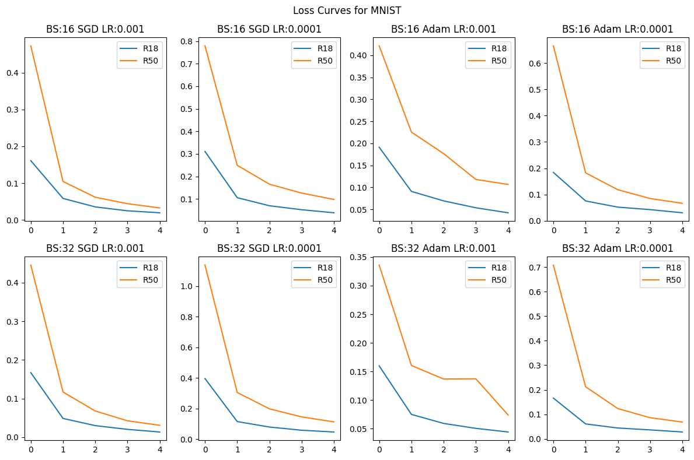
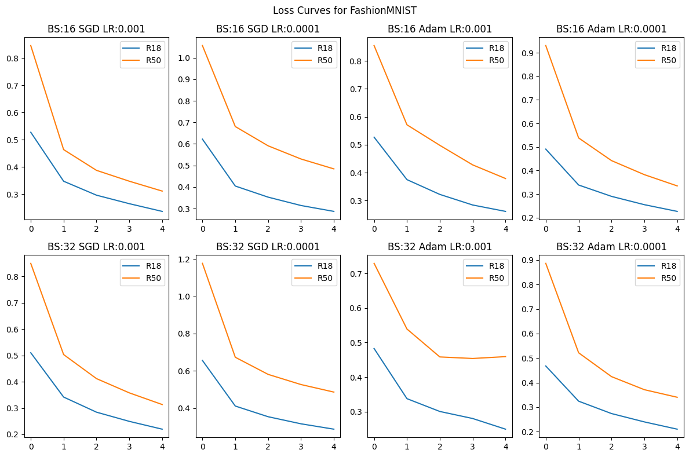

Author: Yogesh Sharma (B22CH045)
Course: CSL7210 ML-DL-Ops
Email: b22ch045@iitj.ac.in
This assignment presents a comprehensive analysis of deep learning models trained on MNIST and FashionMNIST datasets. The study evaluates ResNet-18 and ResNet-50 architectures with various hyperparameter configurations, compares their performance with SVM classifiers, and analyzes computational efficiency differences between CPU and GPU implementations.
ResNet-18 emerges as the optimal choice for both MNIST and FashionMNIST datasets. On MNIST, it achieves 99.04% accuracy (batch size 32, SGD, LR 0.001), while on FashionMNIST, it reaches 90.86% accuracy (batch size 32, Adam, LR 0.0001). Despite being shallower, ResNet-18 consistently outperforms ResNet-50 by 1-12 percentage points, demonstrating that deeper networks don't always guarantee better performance. The model's efficiency is further highlighted by its 2.27x fewer FLOPs and faster training times, making it the ideal balance between accuracy and computational cost.
This assignment provided valuable insights into deep learning model selection and optimization. I learned that deeper networks are not always better—ResNet-18's superior performance demonstrates that architecture depth must be matched to task complexity. The experiments revealed the critical importance of hyperparameter tuning, with learning rates and optimizers significantly impacting model convergence and final accuracy. Additionally, the CPU vs GPU comparison highlighted that GPU acceleration is essential for practical deep learning workflows, providing 13-20x speedup with minimal accuracy trade-offs. The loss curve analysis taught me to interpret training dynamics and identify optimization challenges early in the training process.
| Batch Size | Optimizer | Learning Rate | ResNet-18 | ResNet-50 |
|---|---|---|---|---|
| 16 | SGD | 0.001 | 98.92 | 98.57 |
| 16 | SGD | 0.0001 | 98.87 | 97.79 |
| 16 | Adam | 0.001 | 98.95 | 98.69 |
| 16 | Adam | 0.0001 | 98.92 | 98.06 |
| 32 | SGD | 0.001 | 99.04 | 98.51 |
| 32 | SGD | 0.0001 | 98.43 | 96.61 |
| 32 | Adam | 0.001 | 98.93 | 97.98 |
| 32 | Adam | 0.0001 | 98.89 | 97.43 |
| Batch Size | Optimizer | Learning Rate | ResNet-18 | ResNet-50 |
|---|---|---|---|---|
| 16 | SGD | 0.001 | 90.55 | 88.51 |
| 16 | SGD | 0.0001 | 89.66 | 84.71 |
| 16 | Adam | 0.001 | 90.67 | 87.26 |
| 16 | Adam | 0.0001 | 90.21 | 88.36 |
| 32 | SGD | 0.001 | 89.22 | 87.69 |
| 32 | SGD | 0.0001 | 88.43 | 83.82 |
| 32 | Adam | 0.001 | 90.37 | 77.94 |
| 32 | Adam | 0.0001 | 90.86 | 87.70 |

The loss curves for MNIST show that ResNet-18 consistently achieves lower training loss than ResNet-50 across all hyperparameter configurations. Both models show rapid loss reduction in the first epoch, with ResNet-18 reaching lower final loss values (approximately 0.01-0.05) compared to ResNet-50 (approximately 0.03-0.12).

The loss curves for FashionMNIST reveal that ResNet-18 consistently achieves lower training loss (final loss around 0.22-0.30) compared to ResNet-50 (final loss around 0.32-0.50). ResNet-50 starts with higher initial loss and converges more slowly, particularly with lower learning rates. The most dramatic difference is observed with batch size 32, SGD, and learning rate 0.0001, where ResNet-50 starts at approximately 1.18 loss compared to ResNet-18's 0.65.
| Dataset | Kernel | Test Accuracy (%) | Training Time (ms) |
|---|---|---|---|
| MNIST | poly | 97.99 | 443,644 |
| MNIST | rbf | 97.89 | 661,262 |
| FashionMNIST | poly | 89.50 | 844,565 |
| FashionMNIST | rbf | 88.87 | 952,153 |
| Compute | BS | Optimizer | LR | Test Accuracy (%) | Train Time (ms) | FLOPs | |||
|---|---|---|---|---|---|---|---|---|---|
| R18 | R50 | R18 | R50 | R18 | R50 | ||||
| CPU | 16 | SGD | 0.001 | 85.94 | 83.16 | 578,479 | 1,381,111 | 37.2M | 84.3M |
| CPU | 16 | Adam | 0.001 | 87.40 | 82.98 | 816,487 | 1,758,394 | 37.2M | 84.3M |
| GPU | 16 | SGD | 0.001 | 86.99 | 81.93 | 43,956 | 75,700 | 37.2M | 84.3M |
| GPU | 16 | Adam | 0.001 | 85.13 | 80.60 | 44,321 | 87,726 | 37.2M | 84.3M |
Note: R18 = ResNet-18, R50 = ResNet-50
B22CH045_Yogesh_Sharma_Ass1_1.ipynb: Main experiment notebook (Q1a, Q1b)B22CH045_Yogesh_Shamra_Ass1_2.ipynb: Hardware comparison notebook (Q2)B22CH045_Yogesh_Sharma_Ass1.pdf: Complete Assignment reportimage1.png: FashionMNIST loss curvesimage2.png: MNIST loss curves